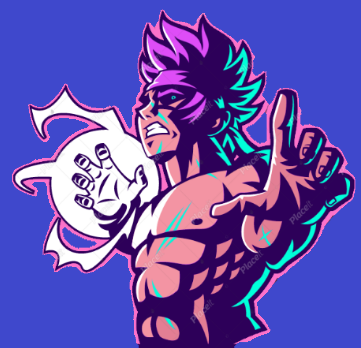

Nova Comics™ presents
DRAGON BALL XTREME®
Coming Late 2023
on CloudStream | Youtube | Yumblr
The lyrics to your requested UK raps
The mandem too inconsiderate
Five-star hotel, smoking cigarette
Mixin' codeine up with the phenergan
She got thick but she wanna get thin again
Drinkin' apple cider vinegar
Wearin' Skim 'cause she wanna be Kim and 'em
Uh, alright
I know that you're bad, stop actin' innocent
We ain't got generational wealth
It's only a year that I've had these millions
My whip could've been in the Tokyo Drift 'cause it's fast and furious
I went from the Toyota Yaris to Urus
They had their chance but blew it
Now this gyal want me in her uterus
Fuck it, I'm rich, let's do it (fuck it)
Take a look at these diamonds wrong
It's a life of squintin', can't just stare
With bae through thick and thin
She already thick, so I'm halfway there
Brown and bad
Couldn't change my mind, I was halfway there
One hundred meters, huh
I just put nine gyal in a Sprinter (uh)
One hundred eaters
They won't fit in one SUV (nah)
S-O-S, somebody rescue me
I got too many gyal, too many-many gyal, I got
They can last me the next two weeks (uh, huh)
Alright, like send the address through please
SUV, the outside white
The inside brown like Michael Jack
More time man build a line and trap
Spend like I don't even like my stack
Pistol came on a Irish ferry
Let go and it sound like a tap dance
The way that I ball
No yellow, the ref have to give me a black card
Who did what we're doin' with rap?
Man couldn't sell out his show after all them years of doin' the cap
Sprinter, two gyal in a van
Inter, two man in Milan
Heard one of my tings datin' P. Diddy
Need twenty percent of whatever she bags
Outside, my head in my hands
I told her my name is Cench
She said "no, the one on your birth certificate"
Your boyfriend ran from that diamond test
'Cause they wasn't legitimate (nah)
She Turkish-Cypriot but her curves Brazilian
I want her and bro wants her affiliate
I'm cheap, still hit a chick like "yo, can I borrow your Netflix?"
She a feminist, she think I'm sexist
Twistin' my words, I think she dyslexic
Give me my space, I'm intergalactic
Before I give you my Insta password
I'll give you the pin to my AmEx
Huh, alright
This ain't stainless steel, it's platinum
Dinner table, I got manners, huh
T-shirt tucked in, napkin
"Still loadin'" that's the caption
I've only amounted a minimal fraction
Eat good, I got indigestion
Bare snow in my hood, no Aspen
Can't get rid of my pain with Aspirin
Dave just came in a Aston, I'm makin' that Maybach Music (Maybach Music)
They're tryna insult my intelligence, sometimes I may act stupid
I never went Uni, I been on a campus selling cocaine to students
If bro let the drumstick beat
Then something gon' leak, we ain't playin' exclusives
Take a look at these diamonds wrong
It's a life of squintin', can't just stare
With bae through thick and thin
She already thick, so I'm halfway there
Brown and bad
Couldn't change my mind, I was halfway there
One hundred meters, huh
I just put nine gyal in a Sprinter
One hundred eaters
They won't fit in one SUV (nah)
S-O-S, somebody rescue me
I got too many gyal, too many-many gyal, I got
They can last me the next two weeks (uh, huh)
Alright, like send the address through please
Fire for a wife beater
Can't rock with that, I ain't wearin' a vest
Man have to send her therapy
She got a E cup bra, a lot on her chest
I'm in Jamaica, Oracabess'
Hit a lick, went Cash Converters
That don't work, it's pawn, no chess
I'm doin' more and talkin' less
I love chillin' with broke bitches
Man book one flight and they all impressed
I'm in the G63
The car hug me like a friend through twist and turns
Man livin' for nyash and dyin' for nyash, it's fucked
Don't know which one's worse, I'm fucked
Bags in his and hers
What's hers is hers, what's mine is too
Heard that girl is a gold digger
It can't be true if she dated you
AP baby blue, paper's pink
I'd probably hate me too
You ever spent six figures and stared at bae like
"Look what you made me do"?
Yeah, (alright) started with a Q, didn't wait in line
Weird, I'm askin' my Blasian one
"Why you so focused on your Asian side?"
I know that the jack boys pray that they get to the clubs and Dave's inside
It's the best bit out of making music, you know?
I swear down, it ain't even the bars I spit, innit? It's the adlibs
It's like—, here, I'll show you, you gotta dash the crowd up
Say, "La, ha, ha, ha" (HARGO production)
I've got more than enough in my locker
I feel like Rocky the moment he got up, ha
ArrDee, ArrDee, ha, ha, ha, ArrDee, ArrDee, hey, huh
I've got more than enough in my locker (uh)
Bruv, I'm a warrior, I feel like Rocky the moment he got up (champ)
It's some champion shits, I just keep on landin'
I know it ain't just 'bout all the bangs you hit (huh)
But I'm still here standin'
Takin' on the whole lot while I'm off my rocker (my rocker)
But, I've got more than enough in my locker (more than enough)
Kick me on the ground and I'll bite your foot
We don't know about stop (no way)
We know about loss after loss
It would turn you soft, turned me to a boss
A survivor, made of fury, glad that it made me wilder
'Cause the battles, they made me wiser
Cover my locker in petrol and watch it light up (fuck it)
A product of my environment, watch me walk out the flames (no worries)
Turn my back on the smoke, look close, you can still see the fire in my gaze (ha)
Carry the torch through the town and use the light to make it out the maze (ayy)
When you're born this hot, you feel safe in blaze, burning and I don't feel fazed
Ooh, ArrDizzle the dog had a taste of the blood, fresh wounds in the game
Now I want it all and I can't be tamed 'til nuttin' but scars remain (can't tame me)
And I can't refrain from claiming the fame 'cause look at how far I've came (look at it)
Best wake up and smell my mocha (huh)
I've got more than enough in my locker (more than enough)
Bruv, I'm a warrior, I feel like Rocky the moment he got up (uh)
It's some champion shits, I just keep on landin'
I know it ain't just 'bout all the bangs you hit (no)
But I'm still here standin'
Takin' on the whole lot while I'm off my rocker (my rocker)
But, I've got more than enough in my locker (more than enough)
Kick me on the ground and I'll bite your foot
We don't know about stop (ah)
We know about loss after loss
It would turn you soft, turned me to a boss
A survivor, made of fury, glad that it made me wilder
'Cause the battles, they made me wiser
Speedin' ahead, I don't need no visor, I'm a soldier
Never looked up to an older, bruv, I got here off my own back (Jack)
Paid homage to greats before me, respect, I'm owed that
I neglect the throwbacks but the stress, it still rolls 'round me
That smell, it just sticks (just stays there)
Just like the cigs that I got on my breath, I want all the smoke
I feel colossal like Khali (huh)
They ain't got the bottle like ArrDee
Who else came in the game, talked their shit
Actions, backed it like Muhammed Ali? (Tell me who, fam)
That's what I thought (ha)
Somebody tell them man to hang up their gloves
'Cause everybody's bored, plus— (ah)
I've got more than enough in my locker (more than enough)
Bruv, I'm a warrior, I feel like Rocky the moment he got up (rah, rah, rah, got up)
It's some champions shit (rah), I just keep on landin'
I know it ain't just 'bout all the bangs you hit (no way)
But I'm still here standin'
Takin' on the whole lot while I'm off my rocker (off my nut)
But, I've got more than enough in my locker (more than enough)
Kick me on the ground and I'll bite your foot
We don't know about stop (ha)
We know about loss after loss
It would turn you soft, turned me to a boss (to a boss)
A survivor (huh), made of fury, glad that it made me wilder
'Cause the battles, they made me wiser, uh
I've got more than enough in my locker (ah)